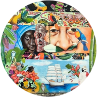

Sin conexión a internet. El portal necesita internet para funcionar.

Portal de Gestión Interna
Inclusión Social · Complejo Tecnológico Agroindustrial, Pecuario y Turístico – Apartadó
Está tardando más de lo normal.
Volver a intentar
Presiona «atrás» otra vez para salir.
Instala el portal
Ábrelo como una app, a pantalla completa.
Instalar
Instalar en mi celular
Entendido